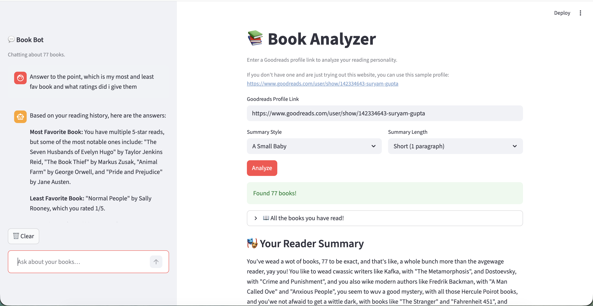

📚 Goodreads Book Analyzer
A live AI-powered web app that analyzes any public Goodreads profile and generates personalized insights into
reading habits, genre preferences, personality, and more. Built using LangChain, Groq LLMs, and Streamlit.

The app in action — BookBot sidebar (left) alongside reading summary and analysis results (right).
Overview
The Goodreads Reader Analyzer is a Streamlit-based web application that takes any public Goodreads profile URL and produces
a rich, AI-generated breakdown of the user's reading life. The app fetches all shelves (read, currently reading, want to read)
via the PirateReads API and pipes this data through a multi-model LangChain pipeline to generate five distinct types of analysis —
all with a conversational BookBot running in the sidebar for follow-up questions.
Key Features
-
Reading Summary — A narrative overview of the user's reading history generated in one of five tonal styles:
Warm & Witty, Baby Talk, LinkedIn Update, Pirate, or Roast Master.
-
Genre Analysis — Identifies the user's top 5 genres, mapping specific books from their library to each genre with rationale.
-
Personality Card — A creative "reader type" label with 4 personality traits, a guilty pleasure read, a signature author,
and a one-line diagnosis.
-
Book Recommendations — 5 personalized book suggestions (not already in the user's library), contextually grounded
in their identified genres and reading patterns.
-
Review Analysis — Deconstructs how the user rates and writes reviews: their rating style, review voice, recurring patterns
in what excited or disappointed them, and hidden behavioral tendencies.
-
BookBot — A sidebar chatbot that answers natural language questions about the user's reading history
(e.g., "What's my most-read author?" or "Which genre do I avoid?"), with automatic model fallback on rate limits.
Architecture & Design
The project is built around several notable LangChain and system design patterns:
-
Parallel Execution (RunnableParallel) — Genre analysis and personality card generation run simultaneously,
cutting latency by ~50% since they share the same input but are fully independent.
-
Sequential Chaining — Book recommendations are generated as a two-step sequential chain:
genre analysis runs first, and its output is fed as context into the recommendation chain for grounded, relevant suggestions.
-
Multi-Model Rate Limit Spreading — Six different Groq models are deployed across tasks (llama-4-scout, kimi-k2,
qwen3-32b, llama-3.3-70b, llama-3.1-8b), each selected for its throughput-capability trade-off. The BookBot has a 3-model
automatic fallback chain to handle rate limits transparently.
-
Robust Output Parsing — A custom
make_safe_parser() wraps Pydantic v2's output parser to handle
thinking-model outputs: strips <think>...</think> blocks, extracts all candidate JSON objects from
prose, and validates each until one passes the schema — critical for models like kimi-k2 and qwen3.
-
Streamlit Caching — All expensive operations (book fetching, LLM analysis) are cached with a 1-hour TTL,
keyed on inputs, so repeat visits or re-runs within the session are instant.
-
Context Stuffing (No RAG) — The BookBot injects the user's full reading history into the system prompt on every
turn instead of using a vector database — simpler architecture while maintaining high accuracy for personal data Q&A.
Tech Stack
Python
LangChain
Groq API
Streamlit
Pydantic v2
LLaMA 3 / LLaMA 4
Kimi K2
Qwen3-32B
PirateReads API
RunnableParallel
PydanticOutputParser
RAG (Context Stuffing)